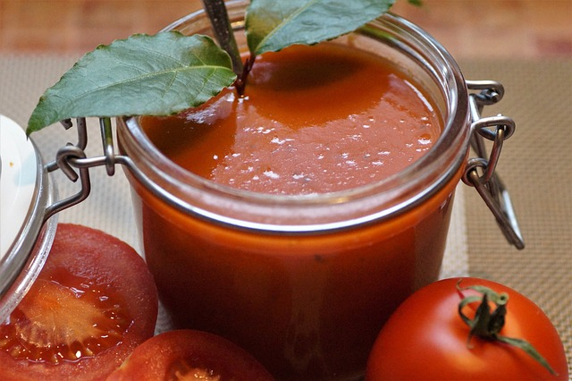

Tomato Soup

Description
Homemade Tomato Soup from Fresh Ripe Tomatoes is our favorite Summer soup recipe!
Make this soup in just 15 minutes using fresh ingredients.
We like to use homegrown heirloom tomatoes in this recipe. These tomatoes are known for their rich,
complex flavors and unique varieties.
Ingredients
- Tomato
- Garlic
- Bay leaves
- Butter
- Salt
Steps
- melt 2 tablespoons of butter in a pot on medium-low heat. The butter should melt and slightly simmer, but not burn.
- Next, add 2 bay leaves and fry them in the butter for a few seconds until lightly browned, but again, not burned.
- Add ½ teaspoon of finely chopped garlic and ⅓ cup of finely chopped onions to the pan, and stir.
- Sauté and stir until the onions become translucent, about 3 to 4 minutes.
- Now add the fresh chopped tomatoes (500 grams, or 6 to 7 medium tomatoes), and a hearty pinch of salt to taste.
chopped tomatoes with salt on top added in steel pan.
- Mix well, cover and simmer on a low to medium-low heat until the tomatoes soften, about 8 to 10 minutes
- Stir occasionally and keep an eye on the consistency of the mixture. If the liquids dry up and the tomatoes begin to stick, then add a splash of water at a time and stir.
- Once the tomato mixture has cooled to a point that’s safe to work with, add it to a blender jar. You could also use an immersion blender.
- Next, add 1 teaspoon of raw sugar or white sugar.
- Mix it well and stir. Now serve the tomato soup.